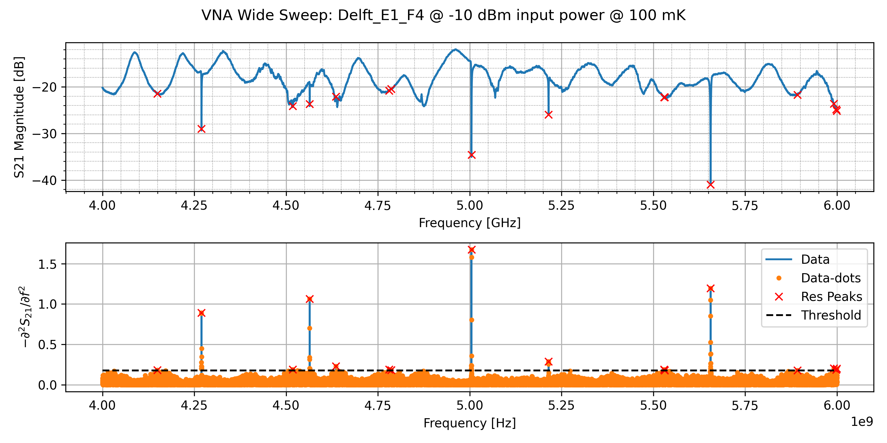
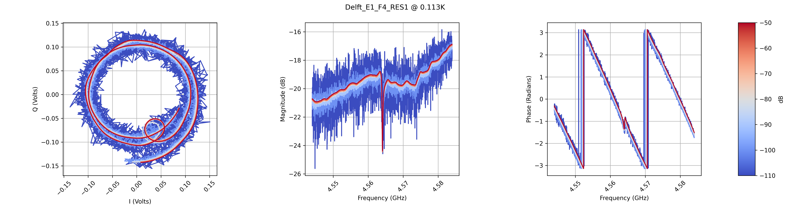

Temperature Sweeps
The fit for rez1 was poor so we didn't include it in our final dataframe for the sample
Summary:
SiC w/ SiNx capping layer, lambda/4 but showed up in lambda/2 freqs
*should probably include some info about the mask.


The fit for rez1 was poor so we didn't include it in our final dataframe for the sample